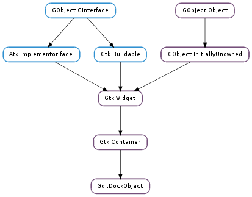

| Subclasses: | Gdl.DockItem, Gdl.DockPlaceholder, Gdl.Dock |
|---|
| static | nick_from_type(type) |
| static | set_type_for_nick(nick, type) |
| static | type_from_nick(nick) |
| bind(master) | |
| child_placement(child, placement) | |
| detach(recursive) | |
| dock(requestor, position, other_data) | |
| dock_request(x, y, request) | |
| freeze() | |
| get_controller() | |
| get_long_name() | |
| get_master() | |
| get_name() | |
| get_parent_object() | |
| get_pixbuf() | |
| get_stock_id() | |
| get_toplevel() | |
| is_automatic() | |
| is_bound() | |
| is_closed() | |
| is_compound() | |
| is_frozen() | |
| layout_changed_notify() | |
| present(child) | |
| reduce() | |
| reorder(child, new_position, other_data) | |
| set_long_name(name) | |
| set_manual() | |
| set_name(name) | |
| set_pixbuf(icon) | |
| set_stock_id(stock_id) | |
| thaw() | |
| unbind() |
| Name | Type | Flags | Description |
|---|---|---|---|
| long-name | str | r/w | Human readable name for the dock object |
| master | Gdl.DockMaster | r/w | Dock master this dock object is bound to |
| pixbuf-icon | int | r/w | Pixbuf icon for the dock object |
| stock-id | str | r/w | Stock icon for the dock object |
| Name | Parameters | Return | Description |
|---|---|---|---|
| detach | bool | Signals that the Gdl.DockObject is detached. | |
| dock | Gdl.DockObject, Gdl.DockPlacement, GObject.Value | Signals that the Gdl.DockObject has been docked. |
| Name | Type | Access |
|---|---|---|
| container | Gtk.Container | r |
| deprecated_flags | Gdl.DockObjectFlags | r |
| deprecated_master | GObject.Object | r |
Bases: Gtk.Container
| Parameters: | type (GObject.GType) – The type for which to find the nickname |
|---|---|
| Returns: | If the object has a nickname, then it is returned. Otherwise, the type name. |
| Return type: | str |
Finds the nickname for a given type
| Parameters: |
|
|---|---|
| Returns: | If the nick was previously assigned, the old type is returned. Otherwise, GObject.TYPE_NONE. |
| Return type: |
Assigns an object type to a given nickname. If the nickname already exists, then it reassigns it to a new object type.
| Parameters: | nick (str) – The nickname for the object type |
|---|---|
| Returns: | If the nickname has previously been assigned, then the corresponding object type is returned. Otherwise, GObject.TYPE_NONE. |
| Return type: | GObject.GType |
Finds the object type assigned to a given nickname.
| Parameters: | master (GObject.Object) – A Gdl.DockMaster |
|---|
Add a link between a Gdl.DockObject and a master. It is normally not used directly because it is automatically called when a new object is docked.
| Parameters: |
|
|---|---|
| Returns: | True if child is a child of object. |
| Return type: |
This function returns information about placement of a child dock object inside another dock object. The function returns True if child is effectively a child of object. placement should normally be initially setup to Gdl.DockPlacement.NONE. If it’s set to some other value, this function will not touch the stored value if the specified placement is “compatible” with the actual placement of the child.
placement can be None, in which case the function simply tells if child is attached to object.
| Parameters: | recursive (bool) – True if children have to be detached too. |
|---|
Signals that the Gdl.DockObject is detached.
| Parameters: |
|
|---|
Signals that the Gdl.DockObject has been docked.
| Parameters: |
|
|---|---|
| Returns: | True if object has been docked. |
| Return type: |
Dock a dock widget in object at the defined position.
Temporarily freezes a dock object, any call to reduce on the object has no immediate effect. If Gdl.DockObject.freeze () has been called more than once, Gdl.DockObject.thaw () must be called an equal number of times.
| Returns: | a Gdl.DockObject object |
|---|---|
| Return type: | Gdl.DockObject |
Retrieves the controller of the object.
| Returns: | the name of the object. |
|---|---|
| Return type: | str |
Retrieves the long name of the object. This name is an human readable string which can be displayed in the user interface.
| Returns: | a Gdl.DockMaster object |
|---|---|
| Return type: | GObject.Object |
Retrieves the master of the object.
| Returns: | the name of the object. |
|---|---|
| Return type: | str |
Retrieves the name of the object. This name is used to identify the object.
| Returns: | a Gdl.DockObject or None if such object does not exist. |
|---|---|
| Return type: | Gdl.DockObject |
Returns a parent Gdl.DockObject if it exists.
| Returns: | icon for dock object |
|---|---|
| Return type: | GdkPixbuf.Pixbuf |
Retrieves a pixbuf used as the dock object icon.
| Returns: | A stock id corresponding to the object icon. |
|---|---|
| Return type: | str |
Retrieves the a stock id used as the object icon.
| Returns: | A Gdl.Dock or None. |
|---|---|
| Return type: | Gdl.Dock |
Get the top level Gdl.Dock widget of object or None if cannot be found.
| Returns: | True if the object is managed automatically by the dock master. |
|---|---|
| Return type: | bool |
Determine if an object is managed by the dock master, such object is destroyed automatically when it is not needed anymore.
| Returns: | True if object has a master |
|---|---|
| Return type: | bool |
Check if the object is bound to a master.
| Returns: | True if the dock object is closed. |
|---|---|
| Return type: | bool |
Checks whether a given Gdl.DockObject is closed. It can be only hidden and still in the widget hierarchy or detached.
| Returns: | True if object is a compound object. |
|---|---|
| Return type: | bool |
Check if an object is a compound object, accepting children widget or not.
| Returns: | True if the object is frozen. |
|---|---|
| Return type: | bool |
Determine if an object is frozen and is not removed immediately from the widget hierarchy when it is reduced.
Emits the Gdl.DockMaster ::layout-changed signal on the master of the object if existing.
| Parameters: | child (Gdl.DockObject or None) – The child widget to present or None |
|---|
Presents the GDL object to the user. By example, this will select the corresponding page if the object is in a notebook. If child is missing, only the object will be show.
Remove a compound object if it is not longer useful to hold the child. The object has to be removed and the child reattached to the parent.
| Parameters: |
|
|---|---|
| Returns: | True if child has been moved |
| Return type: |
Move the child widget at another place.
| Parameters: | name (str) – a name for the object |
|---|
Set the long name of the object. This name is an human readable string which can be displayed in the user interface.
A Gdl.DockObject is managed by default by the dock master, use this function to make it a manual object if you want to manage the destruction of the object.
| Parameters: | name (str) – a name for the object |
|---|
Set the name of the object used to identify it.
| Parameters: | icon (GdkPixbuf.Pixbuf or None) – a icon or None |
|---|
Set a icon for a dock object using a GdkPixbuf.Pixbuf.
| Parameters: | stock_id (str) – a stock id |
|---|
Set an icon for the dock object using a stock id.
Thaws a dock object frozen with Gdl.DockObject.freeze (). Any pending reduce calls are made, maybe leading to the destruction of the object.
This removes the link between an dock object and its master.